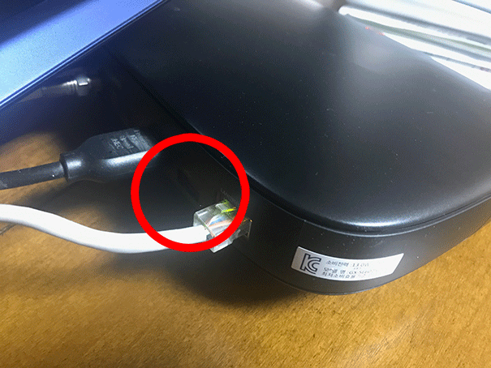
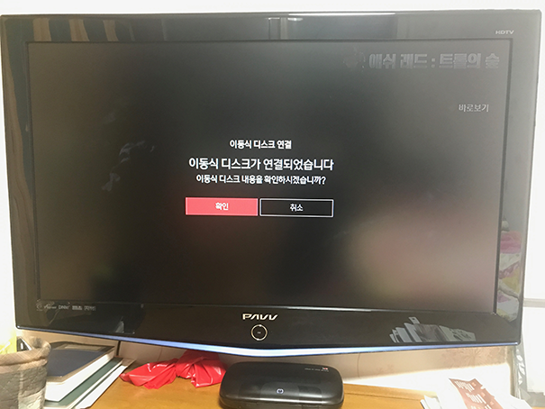
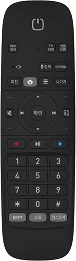
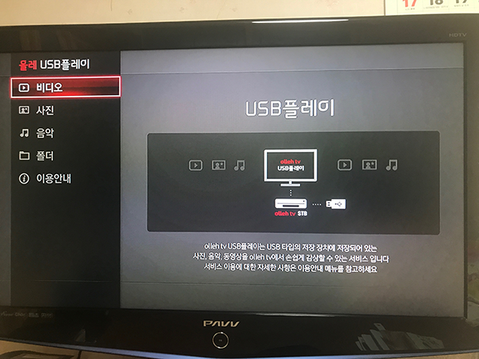
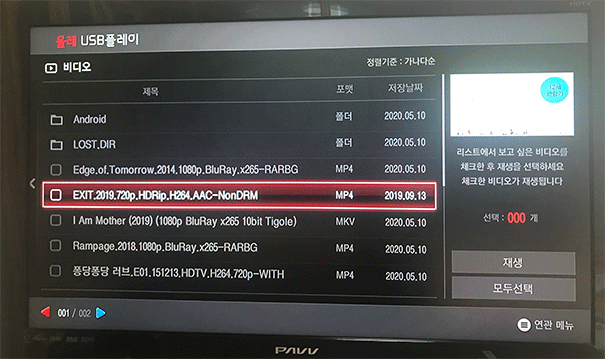
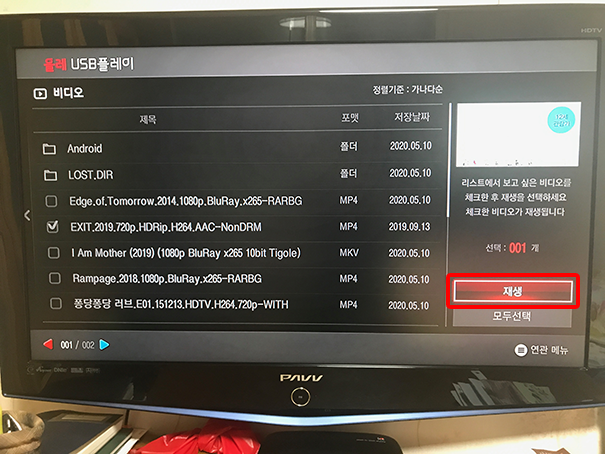

(화면을 불러오는 중..
잠시만 기다려주세요.)
1. TV를 끈 상태로 둔다.

2. TV셋톱박스 뒷면에
USB구멍을 찾아,
USB를 끼운다.
(반짝반짝 빛나는 인터넷 선 옆)
(구멍에 위/아래 구분이 있으니,
안 끼워지면 뒤집어 끼운다.)
3. TV를 켠다.
 
4. TV를 켜면 위의 화면이다.
(위의 화면이 아니라면,
USB를 뺐다가 다시 꽂는다.)
리모컨의 확인을 누른다.
5. 아래의 다음 화면이
될 때까지 기다린다.
(이동 중이라고 뜬다)

6. 위의 화면이 되면,
비디오인 상태 그대로
리모컨의 확인을 누른다.

7. 영화 목록이 뜨면,
리모컨의 위아래 버튼으로
원하는 영화 위로 가서
리모컨의 확인을 눌러서
영화를 체크해준다.
(제목 앞에 체크표시가 되고,
오른쪽에는 선택 개수가 표시됨)


8. 리모컨의 오른쪽 버튼을 눌러서,
오른쪽의 재생에 불이 들어오면,
리모컨의 확인을 누른다.
9. 영화를 다 보면,
그냥 TV를 다 꺼버리면
다음에 틀 때는 일반 TV이다.
(다시 영화를 보려면,
USB를 뺐다 꽂으면 된다.)
아래는 리모컨의 조작법이다.
재생/일시정지는 위의 버튼이다.
앞/뒤로 건너뛰기는 위의 버튼들이다.